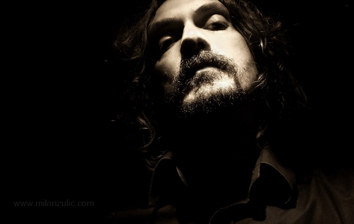

Of Famous Artist
Sombor,1972
Award winning multimedia artist. Showed his paintings, sculptures, photography, video and extended media since 1992
.On 32 solo exhibitions and more then 250 collective in Belgrade, Novi Sad, Podgorica, Rijeka, Zagreb, Ljubljana, Napoli,
Trieste, Piran, Gdansk, Varna, Sofia, Athens, Skopje, Barcelona, Valencia, Málaga, Marseille, Zürich, Warsaw, Buenos Aires, Santa Fe, Shillong, Kochi,
Sao Paulo, Rio de Janeiro, Leon, Toluca, Coventry, Cairo, Walparaiso, Camagüey, Coimbra, Vila Nova de Famalicão, Newark, Vancouver, Long Island City, Sao Luis,
Rennes, Nantes, St Malo, Maubeuge, Stuttgart, Düsseldorf, Antwerp, Liège, Nenagh, Luxembourg, Moscow, Amorgos, Sikinos, Kalamata,
Zanjan, Guadalahara, Monterrey, Mexico City, Rome, New York City, Seoul, Kuala Lumpur.
| year | awards |
|---|---|
| 2003 | First prize for the drawing “Borderline areas of erotica |
| 2010 | Third prize for photography “Speech by Color |
| 2011 | Third prize for photography “Photography of Vojvodina |
| 2012 | Prize for photography, VI International photo competition, Museum Night. |
| 2012 | Jury award for the best design, Dell creative competition, Dell computers. |
| 2012 | First prize for photo collection Horsevill , FKVSV, Novi Sad |
| 2013 | Prize for photography, VI International photo competition, Museum Night, |
| 2015 | Second prize for photography, PhotoCity, Sv.Lovrec, Istria, Croatia |
| 2016 | Jury award for video The Circle of life, AviFest, Podgorica, Montenegro |
| 2019 | Jury award, Bio-Art contest, Korea |
|